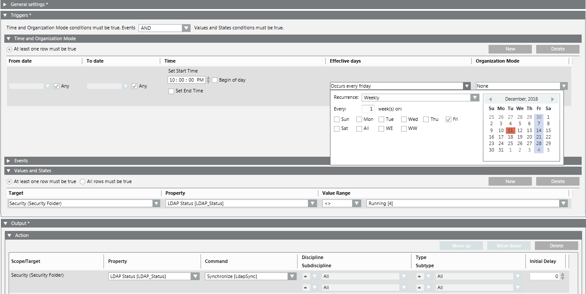

Automatic Synchronization of Domain Groups
Scenario
A synchronization has to be triggered whenever a user has been added to or removed from a domain group. Depending on the frequency of organizational changes, an automatic synchronization has to be triggered on a daily (weekly or monthly) basis. If a user needs to be added before the automatic synchronization takes place, you need to trigger a manual synchronization.
- Synchronization is enabled.
- Select Applications > Logics > Reactions.
- The Reaction Editor tab displays.
- Open the General Settings expander.
- In the Notes field, enter Automatic synchronization of LDAP every night at 10 PM.
- In the Triggers expander, select from the drop-down-list the condition AND.
- In the Time and Organization Mode expander, set its fields as follows:
a. In the Time column, clear the Begin of day check box, in the Set start time field enter 10:00:00 PM.
b. Clear the Set end time check box.
c. In the Effective Days column, open the drop-down list and, for example, set Recurrence: Weekly, select the frequency Every: 1 week, and select an option. - In the Output expander, open the Action expander.
a. In System Browser, select Management View.
b. Select Project > System Settings > Security.
c. Drag Security into the empty area of the Scope/Target column in the Action expander.
d. In the Property column, select LDAP Status.
e. In the Command column, select Synchronize.
f. In the remaining four fields, leave the default setting (All). - (Optional) In the Triggers expander, open the Values and States expander.
NOTE: This setting avoids an additional run if the synchronization is already running.
a. Select Project > System Settings > Security.
b. Drag Security into the empty area of the Target column in the Values and States expander.
c. In the Property column, select LDAP Status.
d. In the Value Range column, select <> and Running.
e. Select the At least one row must be true option. - Click Save As
 .
. - In the Save Object As dialog box, select the main Reactions folder or any subfolder under it as the saving destination:
a. Enter name and description, for example, Automatic Daily LDAP Synchronization.
b. Click OK.
- The new reaction object is available in System Browser, and is enabled by default.
- The execution of the LDAP synchronization is logged. In case of a synchronization error, a status alarm is triggered.
